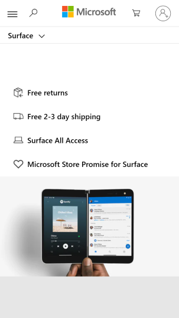
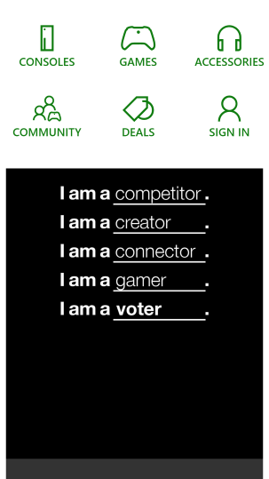

Proximity
Bing: bing.com

Elements of the page are grouped together to show relationships. The Bing logo is closer to the search box to create a strong visual connection. The tools inside the search box are also grouped together. The tools menu is placed further away in the upper right-hand corner to create space; they are nearby but serve a peripheral function. The news story at the bottom of the page is just visible, as news is not the primary purpose of the page.
Whitespace
Microsoft Store: microsoft.com

Good use of negative space to help separate elements and give the page a light, airy feeling. The Microsoft log in the top menu bar creates a center of gravity for the design, and the icons on either side of it have a clear purpose. The remainder of the page is organized as a list of selling points, each separated from the others into its own section.
Repetition
Xbox Official Site: xbox.com

The Xbox store repeats the same elements that appear elsewhere on the Microsoft websites, but adds a few custom elements of its own. Here we see a collection of icons that have been designed around the same visual design: line drawings with minimal detail in a common shade of green. Below them is an ad that expertly uses repetition to create a common sense of purpose: encouraging young people to identify as voters in additional to all the other ways they might see themselves.